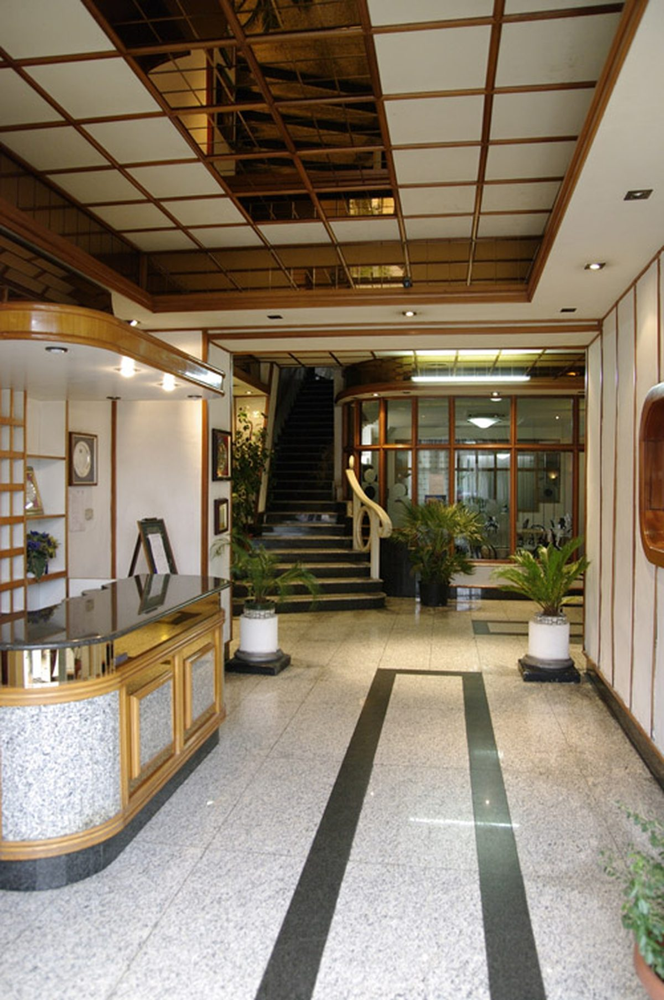
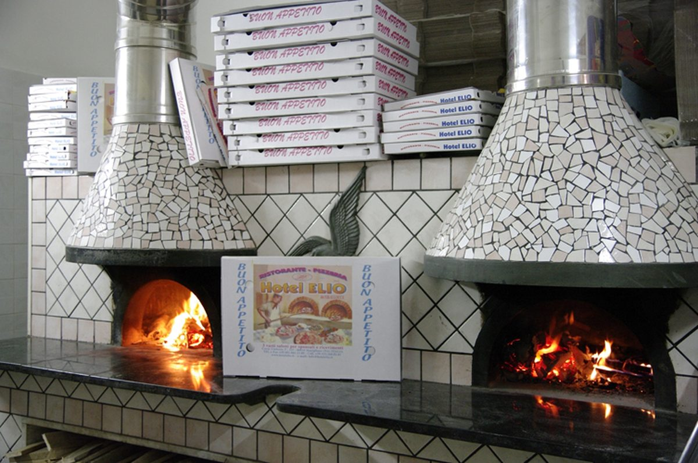

Giardino & Piscina
Un'oasi verde nel cuore di Marigliano
Fuori dalla struttura vi accoglie un giardino curato con piscina, lettini e area relax: ideale per un caffè dopo pranzo o per rilassarsi dopo una giornata di lavoro o di visite.
Albergo Ristorante Elio: tre stelle di ospitalità familiare nel cuore della Campania, con giardino e piscina. Ideale per chi viaggia per lavoro o per visitare Napoli, Pompei e la costa.
L'Albergo Ristorante Elio è una struttura molto accogliente, recentemente ristrutturata per assicurare ai propri ospiti il massimo comfort.
A disposizione della clientela c'è un garage interno gratuito e custodito. La professionalità e la cortesia del nostro staff garantiscono un'atmosfera familiare, grazie alla cura di ogni minimo dettaglio.
Grazie ad alcune convenzioni serviamo la clientela business delle aziende della zona: il CIS di Nola, Alenia, Alfa Romeo, FIAT, Vulcano Buono Nola e l'Interporto Campano.
Scopri l'Hotel
Pensati per il viaggiatore d'affari e per chi visita la Campania in relax.
Garage interno gratuito e custodito, a disposizione di tutti gli ospiti.
Reception 24h con servizio bar e staff che parla inglese, tedesco, spagnolo e francese.
Percorsi diretti allo Stadio, agli scavi di Pompei ed Ercolano, a Napoli e a Sorrento.
Un'oasi verde con piscina e area relax, per godersi il clima della Campania.
A pochi km dalla stazione FS e dalla Circumvesuviana, vicino allo svincolo autostradale.
Cucina tipica napoletana, pizza cotta nel forno a legna e sale per ricevimenti.
Fuori dalla struttura vi accoglie un giardino curato con piscina, lettini e area relax: ideale per un caffè dopo pranzo o per rilassarsi dopo una giornata di lavoro o di visite.

Cucina tipica, pizza cotta nel forno a legna e sale caratteristiche per ricevimenti e banchetti.
Il Ristorante interno all'Hotel Elio, oltre al servizio di colazione per i clienti dell'hotel, offre la possibilità di organizzare ricevimenti e banchetti nelle proprie sale, dall'ambiente tipico e rustico.
Ristorante & PizzeriaContattaci per verificare la disponibilità, richiedere un preventivo per il tuo evento o prenotare un tavolo al ristorante.
Contattaci Ora